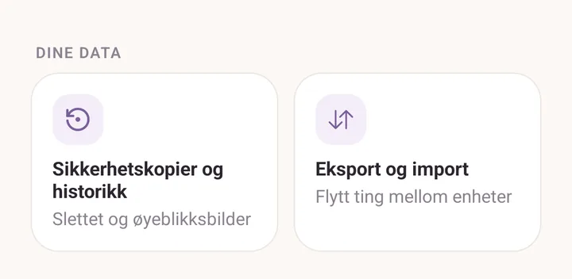
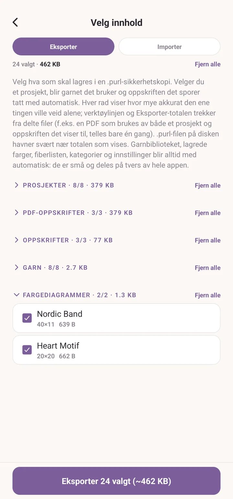
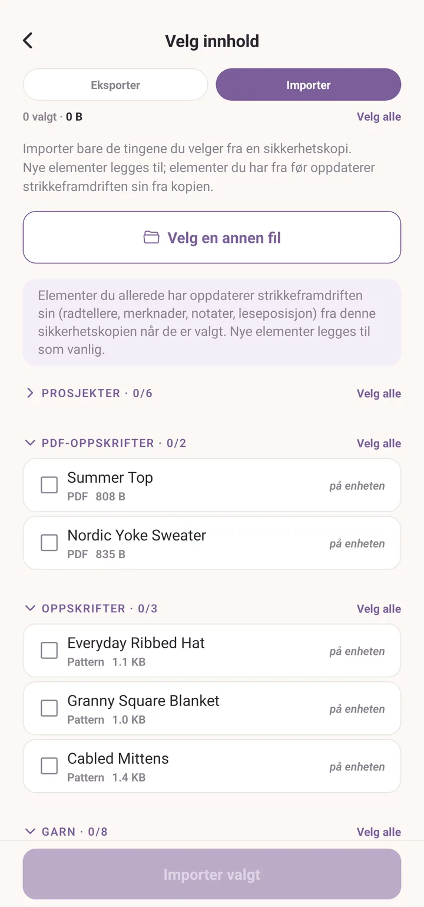
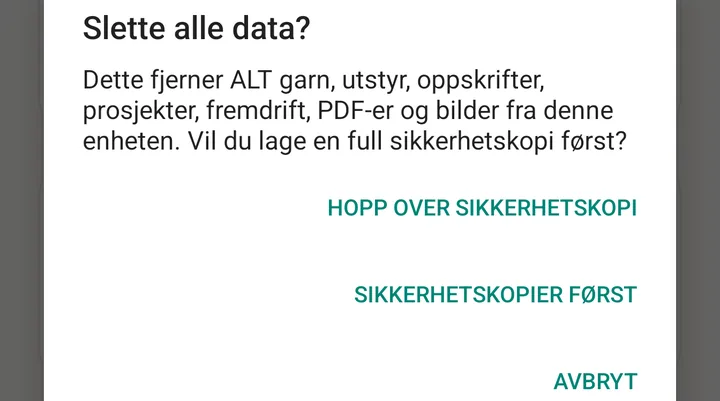

Sikkerhetskopier og gjenoppretting
Tre lag med beskyttelse mot å miste arbeidet ditt.
Kortversjonen
- Nylig slettet: alt du sletter blir liggende i papirkurven i 30 dager. Ett trykk for å hente det tilbake.
- Øyeblikksbilder: Purl tar et lite øyeblikksbilde av alt én gang om dagen og beholder sju dager av dem. Veien tilbake fra noe som gikk skikkelig galt.
- Sikkerhetskopifiler: én
.purl-fil med alt i, lagret der du vil. Veien til en ny enhet, og den eneste kopien som overlever at du mister denne.
Alle tre bor i fanen Mer, under Dine data: Sikkerhetskopier og historikk for de to første, Eksport og import for den tredje.

Nylig slettet
Slett et garn, et utstyr, et prosjekt eller en oppskrift, og det forsvinner ikke egentlig. Det blir liggende i papirkurven i 30 dager.
Åpne Mer, og så Sikkerhetskopier og historikk. Den første bolken er Nylig slettet, nyeste først. Hver oppføring tilbyr Gjenopprett, som henter posten tilbake med filene den hadde, eller Slett for godt, som gjør nettopp det.
Under den er Aktivitetshistorikk en løpende tidslinje over hva du har lagt til, importert, gjenopprettet og slettet i det siste, så du kan se begge veier av det du har holdt på med.
Etter 30 dager ryddes oppføringene i papirkurven bort automatisk.

Øyeblikksbilder
Purl lagrer et øyeblikksbilde av hele tilstanden sin automatisk, når du åpner appen og det har gått mer enn 24 timer. Hvert garn, hver oppskrift, hvert prosjekt, hver innstilling. Sju dager beholdes, og eldre ryddes bort.
De ligger inne i Purls eget lager, ikke noe sted du må holde styr på.
Den samme skjermen har kontrollene: Gjenopprettings-øyeblikksbilder med På og Av, datoen for Forrige øyeblikksbilde, og Ta øyeblikksbilde nå hvis du skal gjøre noe drastisk.
For å bruke et, bla til Øyeblikkshistorikk og trykk på en dato. Purl sammenligner det øyeblikksbildet med dataene dine nå og lister bare det som skiller seg, merket Slettet etter dette eller Endret etter dette. Trykk Gjenopprett på en ting for å hente den tilbake.
Å gjenopprette en endret ting overskriver den nåværende utgaven med utgaven fra øyeblikksbildet, så hvis du kanskje vil ha dagens utgave tilbake, ta et øyeblikksbilde først.
Haken: øyeblikksbilder er bare lokale. En fabrikktilbakestilling av telefonen tørker dem ut også. For trygghet utenfor enheten, bruk sikkerhetskopifiler.
Sikkerhetskopifiler
Åpne Mer, og så Eksport og import. Skjermen er overskrevet Velg innhold og har to modus, Eksporter og Importer.
Eksportere
- Trykk Eksporter.
- Huk av det du vil ta vare på, bolk for bolk: Prosjekter, PDF-oppskrifter, Oppskrifter, Garn, Utstyr, Fargediagrammer. Velg alle ved siden av en bolkoverskrift huker av alt i den bolken. Huker du av et prosjekt, blir garnet det bruker og oppskriften det sporer med automatisk.
- Trykk Eksporter, nederst. Hver bolk starter åpen, så på et fullt bibliotek ligger den knappen langt nede; trykk på en bolkoverskrift for å folde den bort, så kommer bunnen raskt opp. Knappen viser hvor mange ting det er og omtrent hvor stor filen blir.
- Velg hvor den skal. På Android velger du en mappe; ellers åpner systemets delingsark, så du kan legge den i Drive, sende den til deg selv på e-post, eller lagre den i Filer.
Garnbiblioteket, lagrede farger, fiberlisten, kategoriene og innstillingene dine blir alltid med. De er små, de deles på tvers av hele appen, og du ville alltid ha dem med.

Importere
To veier inn: Importer inne i Eksport og import, og så Velg
sikkerhetskopifil; eller trykk på en .purl-fil i filbehandleren din, som
åpner Purl på denne skjermen med filen allerede lastet.
Uansett vei får du en forhåndsvisning, ting for ting, før noe endres. Ting du allerede har er merket på enheten, og nyere i kopien der kopiens utgave er ferskere. Huk av det du vil ha og trykk Importer.
Nye ting legges til. Ting du allerede har beholder plassen sin og henter strikkefremdriften sin fra kopien: radtellere, merknader, notater, leseposisjon. Ingenting du lar stå uavhuket røres.

Dele oppskrifter og bibliotek hver for seg
To mindre formater, for å dele én ting i stedet for alt:
- .purlp: én håndskrevet oppskrift. Del den fra oppskriftens egen skjerm. Åpner du en, legges den oppskriften til i biblioteket.
- .purlt: garnbiblioteket ditt, til å gi en venn som starter fra ingenting. Del det fra delingsikonet i Garnbibliotek. Se Strekkoder og garnbiblioteket.
Dette er bittesmå filer, og de inneholder verken garnet, prosjektene eller bildene dine. Bare den ene navngitte tingen.
Slett alle data på denne enheten
Helt nederst i Mer-fanen ligger Slett alle data på denne enheten. Det er det farligste i appen, så den spør to ganger, og tilbyr deg en vei ut imellom.
- Slette alle data? forklarer hva som går: alt garn, utstyr, oppskrifter, prosjekter, fremdrift, PDF-er og bilder. Den tilbyr Sikkerhetskopier først, Hopp over sikkerhetskopi, eller Avbryt.
- Sikkerhetskopier først kjører en full eksport og går bare videre når filen er trygt skrevet. Hvis eksporten mislykkes, stopper Purl der og sletter ingenting.
- Er du sikker? er det siste trinnet. Slett alt tømmer enheten, også papirkurven med nylig slettet og gjenopprettings-øyeblikksbildene, og kan ikke angres.
Ta sikkerhetskopien. Den koster ett trykk.

Flytte alt til en ny telefon
- På den gamle enheten, åpne Mer, og så Eksport og import.
- Trykk Eksporter, og så Velg alle på hver bolk.
- Trykk Eksporter nederst og lagre
.purl-filen et sted du når fra den nye enheten: Drive, e-post, en USB-overføring. - Installer Purl på den nye enheten.
- Åpne
.purl-filen fra filbehandleren på den nye enheten, eller åpne Mer, Eksport og import, Importer, og så Velg sikkerhetskopifil. - Se over forhåndsvisningen, trykk Velg alle på hver bolk, og trykk Importer.
- Lukk og åpne Purl igjen.
Den nye enheten er tom, så ingenting kolliderer. PDF-er, bilder, tegninger, bokmerker, fargepartier og tellere blir alle med.
Se også
- Stash: stashen som sikkerhetskopieres.
- Strekkoder og garnbiblioteket:
.purlt-formatet. - Oppskrifter:
.purlp-formatet.